- Inicio
- 1. Estructura Básica
- 2. Meta UTF-8
- 3. Párrafos y Encabezados
- 4. Lorem -Texto de Relleno
- 5. Link a CSS
- 6. Clases
- 7. Selectores
Colores
El tema de colores es bastante extendido, sin embargo veremos los elementos mas importantes en cuanto al uso de color en html
En la hoja de estilos, podemos llamar a un color de tres formas:
Por su nombre: 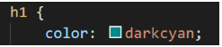 Por su código RGB: 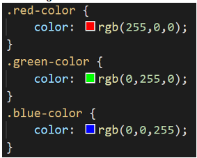 Por su código hexadecimal: 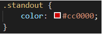Código RGB
Red: 255,0,0; Green: 0,255,0; Blue: ,0,255;Para el color negro seria: 0,0,0
Para el color blanco el otro extremo: 255,255,255
RGB es un modelo de color aditivo.
Con este método, podemos obtener en total mas de 16 millones de colores.
Modelo Aditivo Básico
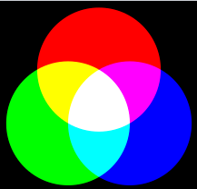Tabla de Colores
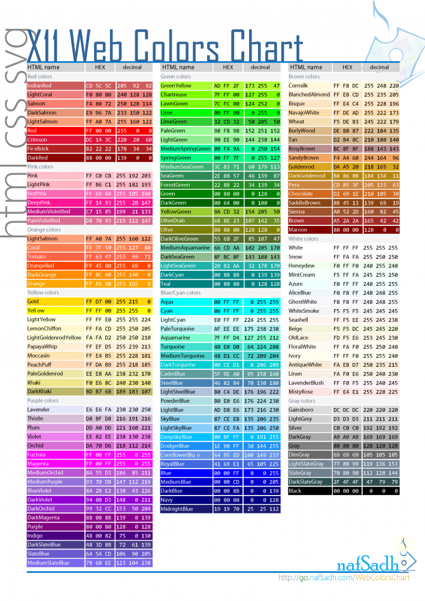Diferencias entre RGB y CMYK:
El acrónimo CMYK hace referencia a los colores Cian, Magenta, Yellow y Key Black (negro).
El modelo RGB se utiliza principalmente en entornos digitales y el modelo CMYK se utiliza con frecuencia en trabajos de impresión.
Obteniendo el color de una imagen:
Para obtener el color de una imagen existen varios métodos.
Con Photoshop a través de herramienta cuentagotas:
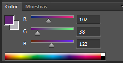Subiendo la imagen a sitios web especializada en esta tarea:
Utilizando el selector de color de paint y la opción editar colores:
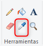 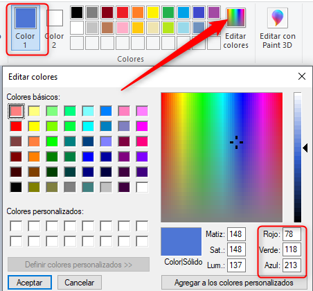 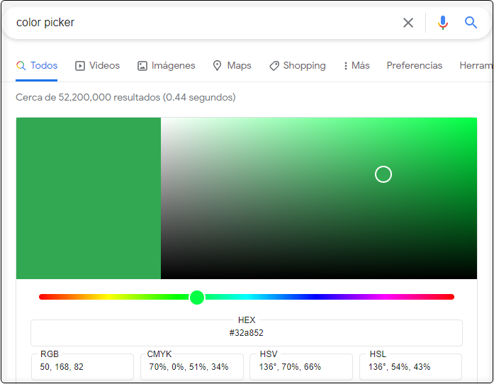 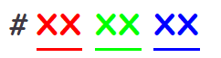Estableciendo un color
Existen multiples herramientas para definir un color. Una de las opciones mas rapides es a traves de chrome. Al ingresar en el cuadro del motor de búsqueda de chrome las palabras color picker obtendremos el siguiente resultado:
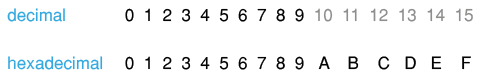Código Hexadecimal
Los colores hexadecimales se representan a través de 6 letras o números que van del 0 al 9 y de la A a la F:
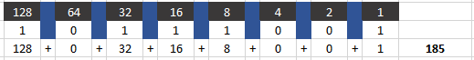Blanco:
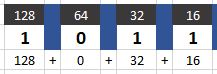Negro
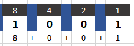Convirtiendo de RGB a Hexadecimal y Viceversa:
A diferencia del sistema decimal en el cual los números van del 0 al 9, en el sistema hexadecimal tenemos 16 elementos unitarios:
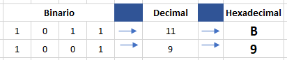Existen varios métodos para la conversión pero uno de los mas comunes es a través de la división.
Vamos a tomar como ejemplo el número 185. El primer paso es convertir el número a binario
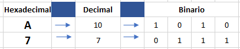El segundo paso es dividir el binario en dos segmentos de 4 y 4:
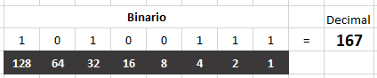Como paso final, convertimos cada sección del código binario en decimal y de esta forma podemos hacer la conversión directa:
El resultado final seria B9
Para convertir de hexadecimal a RGB podríamos hacer todo el procedimiento a la inversa.
Vamos a convertir el HEX A7:
Dividimos el hexadecimal en unidades y lo pasamos a decimal individualmente para después pasarlo a binario:
Juntamos los dos binarios en el orden que vienen y lo convertimos a decimal
El resultado de convertir A7 en base decimal es 167